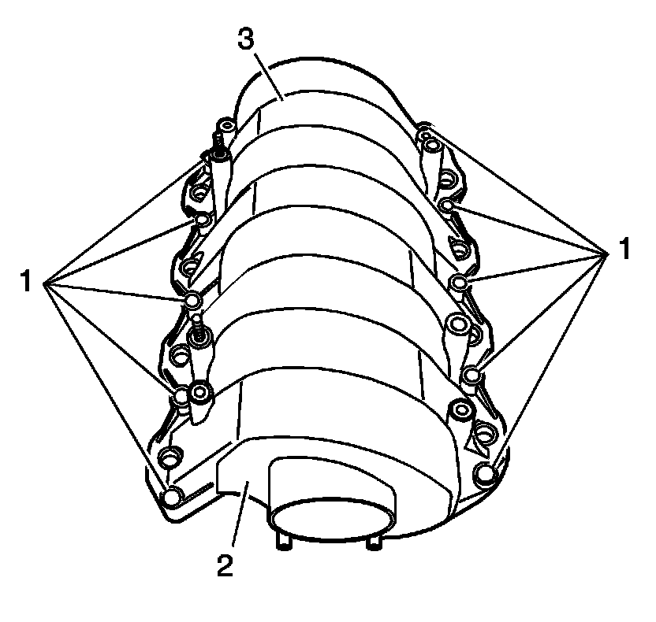
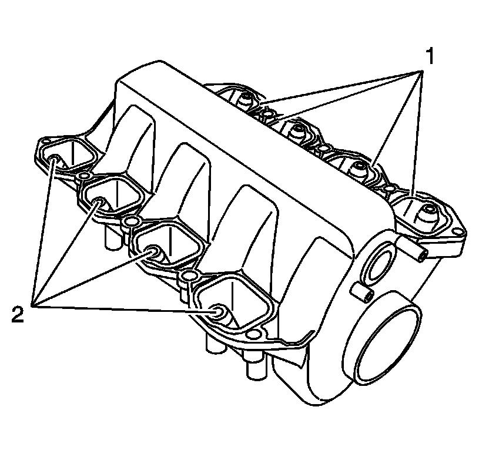
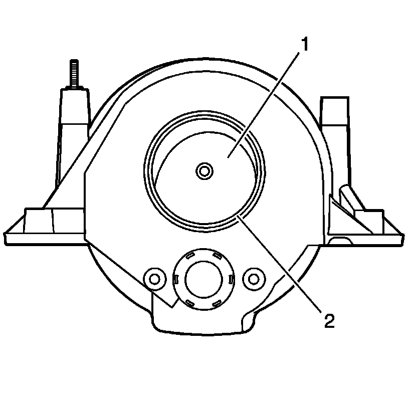
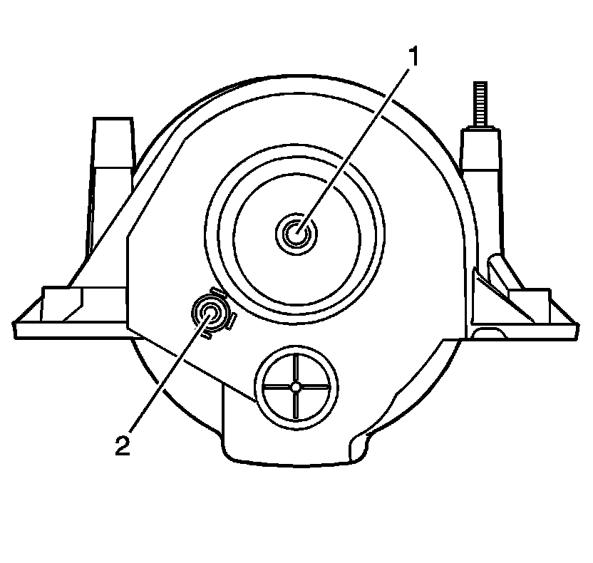

88. Intake Manifold Cleaning and Inspection
Intake Manifold Cleaning and Inspection
Cleaning Procedure
Important: Do not reuse the intake manifold-to-cylinder head sealing gaskets.
1. Remove any remaining gasket and/or gasket material from the intake manifold.
2. Clean the following intake manifold areas in solvent.
* Intake manifold gasket grooves
* Intake manifold passages
* PCV vacuum hose passage
* Vacuum hose fitting passage
Caution: Refer to Safety Glasses Caution (Safety Glasses Warning) .
3. Dry the intake manifold with compressed air.
Inspection Procedure

1. Inspect the intake manifold for the following conditions:
* Damage to the fuel rail mounting inserts (1)
* Damage to the studs (2)

2. Inspect the intake manifold for the following conditions:
* Damage to the intake manifold bolt bosses (1)
* Damage or cracks to the composite intake manifold assembly (2)
* Damage in areas between the intake runners (3)

3. Inspect the intake manifold for the following conditions:
* Damage, gouges or cracks to the intake manifold sealing surfaces and grooves (1)
* Damage or excessive scoring to the fuel injector bores (2)

4. Inspect the front of the intake manifold for the following conditions:
* Damage, debris or restrictions to the intake manifold passage (1)
* Damage to the plenum duct neck (2)

5. Inspect the intake manifold for the following conditions:
* Damage, debris or restrictions to the PCV system hose port (1)
* Damage, debris or restrictions to the vacuum port (2)
6. Inspect the intake manifold cylinder head deck for warpage.
1. Locate a straight edge across the intake manifold cylinder head deck surface.
2. Insert a feeler gage between the intake manifold and the straight edge. An intake manifold with warpage in excess of 0.25 mm per 25 mm (0.010 in per 1.00 in) must be replaced.
7. Repair or replace the intake manifold as necessary.